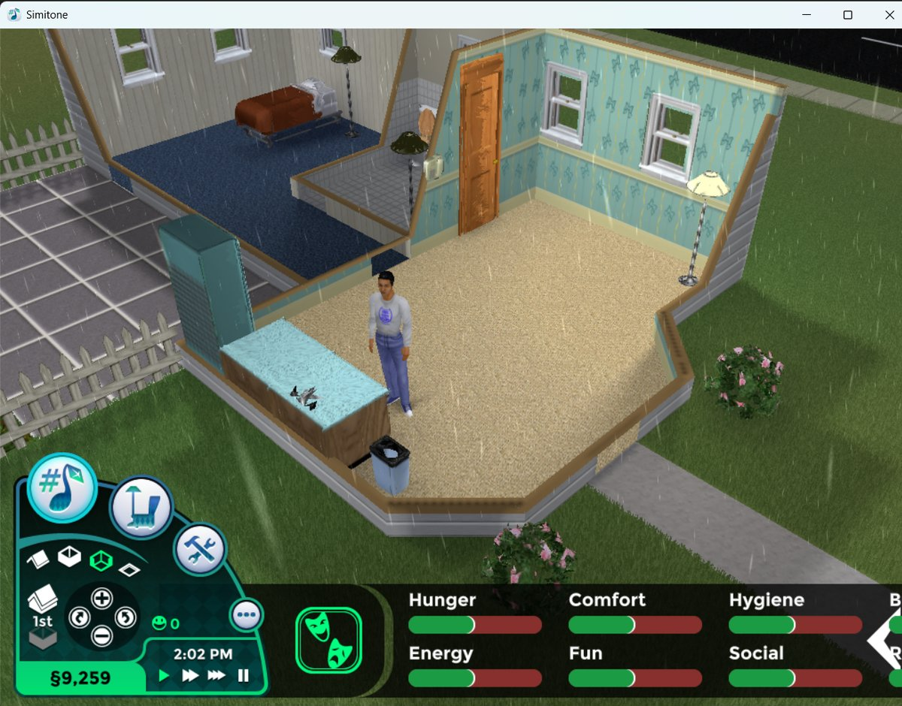
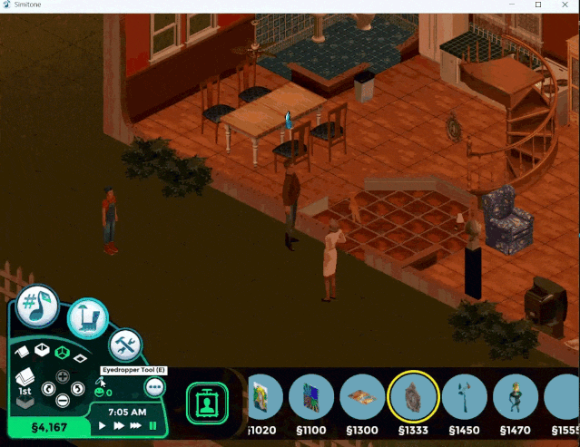
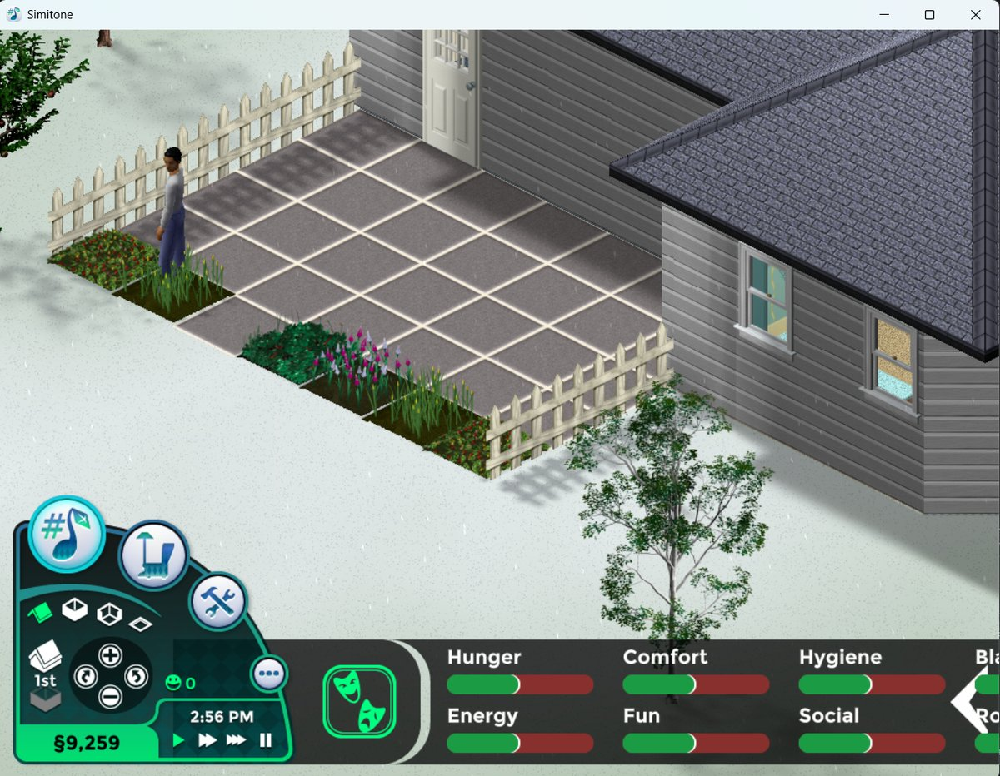
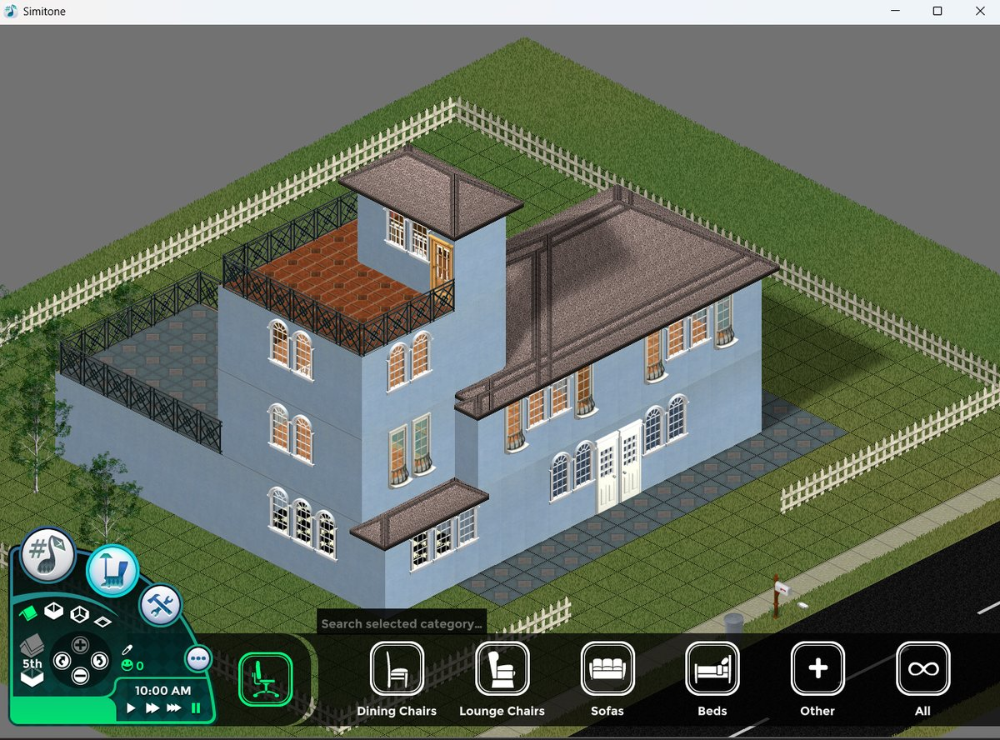

Simitone
A Modern 3D Frontend for The Sims 1
Alternative C# Frontend for The Sims 1, based off of FreeSO. Play in 3D with modern resolutions, custom lighting, greater than 2 story buildings, and quality-of-life improvements.
About This Project
Simitone is an alternative C# frontend for The Sims 1, built on top of FreeSO. It reimagines the classic game with modern graphics technology, providing a playable 3D experience that works on contemporary operating systems.
On modern operating systems, The Sims 1 has nagging issues that make it less than playable. Simitone serves as a tool to improve the playability of your existing installation of The Sims.
Features
Playable in 3D
Experience The Sims 1 in full 3D using a combination of models generated from the 2D sprites and created by the community.
Custom User Interface
Custom user interface that works at modern resolutions. Working on a more desktop oriented interface.
Improved Performance
Better graphical performance with support for high resolutions and refresh rates on modern hardware.
Custom Lighting
Directional lights with smooth falloffs and shadows using generated 3D meshes for realistic illumination.
Quality of Life
Improvements from later games in the series; eyedropper tool, catalog search, camera rotation via mouse wheel, and more.
Cosmetic Weather
Rain, snow, hail, and storms; toggled via the cheat console (Ctrl+Shift+C) for atmospheric gameplay. (Currently has no impact on gameplay)




What's Different in This Fork?
This is a forked version of Simitone with updates that may not be present in the original Simitone repository. Key additions in this fork include:
- Cosmetic Weather System; rain, snow, hail, and storms toggled via cheat console (currently has no impact on gameplay)
- Linux Support; Will now run on Linux!
- QOL Features; improvements from later games in the series; eyedropper tool, catalog search, camera rotation via mouse wheel
- And More!
For a complete list of changes, compare the original repository with this fork on GitHub.
System Requirements
Supported Platforms
| Platform | Status | Notes |
|---|---|---|
| Windows | Supported | Windows 10/11 recommended. Requires .NET 9.0 Runtime + ASP.NET Core 9.0. |
| Linux | Supported | Tested with Ubuntu and Linux Mint. Requires SDL2 and OpenAL. |
| macOS | Not Functional | Builds but does not work. PRs welcome! |
Runtime Requirements
libsdl2-2.0-0, libopenal1
- Ubuntu/Debian:
sudo apt install libsdl2-2.0-0 libopenal1 - Fedora:
sudo dnf install SDL2 openal-soft - Arch:
sudo pacman -S sdl2 openal
Game Files
A legitimate copy of The Sims: Complete Collection or The Sims: Legacy Collection.
Quick Install
Windows
- Download the latest release for Windows.
- Extract the ZIP to your preferred location.
- Run
Simitone.exe.
First-Time Setup
On first launch, Simitone automatically scans for The Sims 1 installations:
- Portable install (relative path
../The Sims/) - Windows Registry (
HKEY_LOCAL_MACHINE\SOFTWARE\Maxis\The Sims) - Steam installation (via Steam registry and libraryfolders.vdf)
- Default install (
C:\Program Files (x86)\Maxis\The Sims\)
If one installation is found, it's auto-configured. If multiple, a selection dialog appears. If none, you can browse manually.
User Data Location
Configuration and save files are stored to: %USERPROFILE%\Documents\Simitone\
Simitone uses separate save files from The Sims 1. Your original saves remain untouched.
Linux
- Download the latest release for your OS.
- Extract the archive to your preferred location.
- Run
./Simitone.
First-Time Setup
Auto-detection scans: Portable (../The Sims/), Steam Proton (~/.steam/steam/steamapps/common/The Sims/), Wine prefixes, or fallback.
Alternatively, specify the path directly:
./Simitone -path"/fully/qualified/path/to/The Sims/"User Data Location
Linux: ~/.local/share/Simitone/ (or ~/Documents/Simitone/ if MyDocuments exists)
macOS: ~/Documents/Simitone/
Optional Command-Line Arguments
| Argument | Description |
|---|---|
-path"<path>" | Specify custom Sims 1 installation path |
-dx / -gl | Force DirectX or OpenGL rendering |
-3d | Enable 3D mode in the game (toggle with F12) |
-jit | Enable JIT compilation for SimAntics |
-hz <rate> | Set refresh rate |
-ide | Launch Volcanic object editor |
-lang <code> | Set language |
-nosound | Disable audio |
Known Limitations
The following features are currently incomplete or have known issues:
- Incomplete Fame career track
- Cannot save while on vacation
- Cannot evict families from lots
- Buy mode on community lots is non-functional
- Rudimentary blur censoring (original censor difficult to implement)
- Custom objects with custom animations may not work properly
- Some stock objects have bugs that can make certain lot types unplayable
Community & Resources
Building from Source
Easy Mode: GitHub Actions
Don't want to set up a build environment? Fork this repository and use GitHub Actions:
- Fork this repository on GitHub.
- Go to the Actions tab (you may need to activate actions).
- Click "Build Simitone" in the left sidebar.
- Click "Run workflow", select Release, pick your platforms, and click "Run workflow".
- Wait ~4-5 minutes or so, refresh the job page, and download the release artifact.
Windows
Prerequisites
- Git (2.13+)
- .NET 9.0 SDK
Steps
git clone https://github.com/alexjyong/Simitone.git
cd Simitone
git submodule update --init --recursive
dotnet restore Client\Simitone\Simitone.sln
dotnet restore FreeSO\TSOClient\FreeSO.sln
dotnet build Client\Simitone\Simitone.sln -c Release --no-restoreOr use the PowerShell build script:
.\build.ps1 # Build (Release)
.\build.ps1 -Run # Build and run
.\build.ps1 -Clean # Clean before buildingLinux / macOS
Prerequisites
Install runtime dependencies first (see System Requirements above).
Steps
git clone https://github.com/alexjyong/Simitone.git
cd Simitone
git submodule update --init --recursive
./build-mac-linux.sh
# Optional: self-contained release build (no system dependencies needed)
./build-mac-linux.sh --publishRun the built executable:
# Standard build
cd Client/Simitone/Simitone.Desktop/bin/Release/net9.0/
./Simitone -path"/path/to/The Sims/"
# Self-contained build
cd publish/Simitone-Linux-x64/
./Simitone -path"/path/to/The Sims/"Troubleshooting
- "FreeSO folder is empty" — Run
rm -rf FreeSO && git submodule update --init --recursive --force - "Unable to locate the .NET SDK" — Install the .NET 9.0 SDK (not just runtime), restart your terminal, and verify with
dotnet --info.
Attributions
- Rhys/riperiperi The creator of the original Simitone project. Check out his other work here.
- Eyedropper Tool Icon: "Color Dropper" icon by Icons8.
- Free Will Option Icon: "Creativity And Resourcefulness" icon by Icons8.
- Rain Loop Sound: Rubaoliva (CC0) — Original file on Freesound.
- Thunder Sound: Raclure (CC0) — Original file on Freesound.